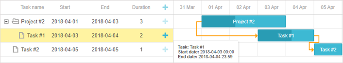

Data Loading
dhtmlxGantt can take data of 2 formats:
To populate a Gantt chart with data, use parse or load method.
gantt.init("gantt_here");
gantt.load("tasks.json");
Related sample: Basic initialization
Loading from Object
To load data from an object, use the parse method:
Loading from an inline data source
var data = {
tasks:[
{id:1, text:"Project #1", start_date:"01-04-2020", duration:18},
{id:2, text:"Task #1", start_date:"02-04-2020", duration:8, parent:1},
{id:3, text:"Task #2", start_date:"11-04-2020", duration:8, parent:1}
]
};
gantt.init("gantt_here");
gantt.parse(data);
Related sample: Basic initialization
Loading from Server
Client side
To load data from a server, use the load method:
gantt.html
gantt.init("gantt_here");
gantt.load("data.json");
The load method will send an AJAX request to the specified url and will expect a response with data in one of the supported formats. For example:
data.json
{
"tasks":[
{"id":1, "text":"Project #1", "start_date":"01-04-2020", "duration":18},
{"id":2, "text":"Task #1", "start_date":"02-04-2020","duration":8, "parent":1},
{"id":3, "text":"Task #2", "start_date":"11-04-2020","duration":8, "parent":1}
],
"links":[
{"id":1, "source":1, "target":2, "type":"1"},
{"id":2, "source":2, "target":3, "type":"0"}
]
}
The format is specified in the second argument of the method: "json", "xml" or "oldxml".
gantt.load("data.xml", "xml");
Server side
On the server you can have either a static file with data or a script that will collect data from the data source and write it to the response. The server-side implementation depends on the framework you want to use.
See detailed instructions and code samples for various platforms in the article Server-Side Integration.
For example, in case of Node.js we should add a server route for the URL where Gantt will send an AJAX request for data.
gantt.load("/data");
It will generate a corresponding response in the JSON format.
app.get("/data", function(req, res){
db.query("SELECT * FROM gantt_tasks", function(err, rows){
if (err) console.log(err);
db.query("SELECT * FROM gantt_links", function(err, links){
if (err) console.log(err);
for (var i = 0; i < rows.length; i++){
rows[i].start_date = rows[i].start_date.format("YYYY-MM-DD");
rows[i].open = true;
}
res.send({ tasks:rows, links : links });
});
});
});
See all supported data formats in the article tasksExploring Supported Data Formats.
Loading Task Dates
Setting task schedule
There are three ways to define a schedule for a task in the data feed:
- start_date + duration
- start date + end_date
- duration + end_date
The property that is not specified will be calculated based on the ones that are defined in the data object.
Related sample: Backward planning
Formatting end dates of tasks
The end dates of tasks are not inclusive. It means that Gantt inteprets the midnight of the latest date in the range as the end of the task, while the latest date itself isn't included into the task duration, and is not shown, as a result. For example, for Gantt a 1-day task scheduled for the 20th of May, 2018 (20-05-2018 00:00:00) will be ended on 21-05-2018 00:00:00, although the 21st of May, 2018 won't be covered by this task.
It's impossible to influence the Gantt format of storing data. However, you can redefine templates for a gantt grid in order to make it show inclusive dates only. Thus, Gantt will display the end date of a task as end_date - 1 rather than take the exact "end_date" value from the code.
In the example below displaying of the end task in the tooltip is redefined via the tooltip_text template:
function formatEndDate(date, template){
// get 23:59:59 instead of 00:00:00 for the end date
return template(new Date(date.valueOf() - 1));
}
gantt.config.columns = [
{name: "text", label: "Task name", tree: true, width: 160, resize:true},
{name: "start_date", label:"Start", align: "center", width: 100, resize:true},
{name: "end_date", label:"End", align: "center", width: 100,
template: function(task){
return formatEndDate(task.end_date, gantt.templates.date_grid);
}, resize:true},
// more columns
];
gantt.init("gantt_here");
var formatFunc = gantt.date.date_to_str("%Y-%m-%d %H:%i");
gantt.templates.tooltip_text = function (start, end, task) {
return "<b>Task:</b> " + task.text + "<br/><b>Start date:</b> " +
formatFunc(task.start_date) + "<br/><b>End date:</b> " +
formatEndDate(task.end_date, formatFunc);
};

Data Properties
A data source for the Gantt chart is an object that stores 2 types of information:
- tasks - the items of tasks.
- links - the items of dependency links.
Properties of a task object
- Mandatory properties - these properties will always be defined on the client, they must be provided by the datasource in order for gantt to operate correctly.
- text - ( string ) the task text.
- start_date - ( Date|string ) the date when a task is scheduled to begin. Must match date_format format if provided as a string.
- duration - ( number ) the task duration. Can be replaced with the 'end_date' property.
- id - ( string|number ) the task id.
- Optional properties - these properties may or may not be defined. The default logic and templates of gantt will use these properties if they are defined.
- type - (string) the task type. The available values are stored in the types object:
- "task" - a regular task (default value).
- "project" - a task that starts, when its earliest child task starts, and ends, when its latest child ends. The start_date, end_date, duration properties are ignored for such tasks.
- "milestone" - a zero-duration task that is used to mark out important dates of the project. The duration, progress, end_date properties are ignored for such tasks.
- parent - ( string|number ) the id of the parent task. The id of the root task is specified by the root_id config.
- progress - ( number from 0 to 1 ) the task progress.
- open - ( boolean ) specifies whether the task branch will be opened initially (to show child tasks).
- end_date - ( Date|string ) the date when a task is scheduled to be completed. Used as an alternative to the duration property for setting the duration of a task. Must match date_format format if provided as a string.
- readonly-(boolean) optional, can mark task as readonly.
- editable-(boolean) optional, can mark task as editable.
- Dynamic properties - are created on the client and represent the current state of a task or a link. They shouldn't be saved to the database, gantt will ignore these properties if they are specified in your JSON/XML.
- $source - ( array ) ids of links that come out of the task.
- $target - ( array ) ids of links that come into task.
- $level - ( number ) the task's level in the tasks hierarchy (zero-based numbering).
- $open - ( boolean ) specifies whether the task is currently opened.
- $index - ( number ) the number of the task row in the gantt.
The default date format for JSON and XML data is "%d-%m-%Y %H:%i" (see the date format specification).
To change it, use the date_format configuration option.
gantt.config.date_format="%Y-%m-%d";
gantt.init("gantt_here");
Once loaded into Gantt, the start_date and end_date properties will be parsed into the Date type.
Date formats that are not supported by the date_format config can be parsed manually via the parse_date template.
Properties of a link object
- Mandatory properties
- id - ( string|number ) the link id.
- source - ( number ) the id of a task that the dependency will start from.
- target - ( number ) the id of a task that the dependency will end with.
- type - (string) the dependency type. The available values are stored in the links object. By default, they are:
- "0" - 'finish_to_start'.
- "1" - 'start_to_start'.
- "2" - 'finish_to_finish'.
- "3" - 'start_to_finish'.
gantt.config.links.start_to_start = "start2start";
- lag-(number) optional, task lag.
- readonly-(boolean) optional, can mark link as readonly.
- editable-(boolean) optional, can mark link as editable.
Custom properties
You are not limited to the mandatory properties listed above and can add any custom ones to data items. Extra data properties will be parsed as strings and loaded to the client side where you can use them according to your needs.
See examples of data with custom properties here.
Database Structure
If you use a database, we recommend to have 2 separate tables to store data: one for tasks and one for links.

The structure of a standard database to load tasks and links to the Gantt chart is:
- gantt_tasks table - specifies the gantt tasks
- id - (string,number) the event id.
- start_date - (Date) the date when a task is scheduled to begin.
- text - (string) the task's description.
- progress - (number) a number from 0 to 1 that shows what percent of the task is complete.
- duration - (number) the task duration in the units of the current time scale.
- parent - (number) the id of the parent task.
- type - (string) optional, the type of the task.
- readonly - (boolean) optional, can mark task as readonly.
- editable - (boolean) optional, can mark task as editable.
- gantt_links table - specifies the gantt dependency links
- id - (string,number) the event id.
- source - (number) the id of the source task.
- target - (number) the id of the target task.
- type - (string) the type of the dependency:
- 0 - 'finish_to_start'
- 1 - 'start_to_start'
- 2 - 'finish_to_finish'
- 3 - 'start_to_finish'
- lag - (number) optional, task lag.
- readonly - (boolean) optional, can mark link as readonly.
- editable - (boolean) optional, can mark link as editable.
Use the following SQL statement to create a database with 2 mentioned tables:
CREATE TABLE `gantt_links` (
`id` int(11) NOT NULL AUTO_INCREMENT,
`source` int(11) NOT NULL,
`target` int(11) NOT NULL,
`type` varchar(1) NOT NULL,
PRIMARY KEY (`id`)
)
CREATE TABLE `gantt_tasks` (
`id` int(11) NOT NULL AUTO_INCREMENT,
`text` varchar(255) NOT NULL,
`start_date` datetime NOT NULL,
`duration` int(11) NOT NULL,
`progress` float NOT NULL,
`sortorder` int(11) NOT NULL,
`parent` int(11) NOT NULL,
PRIMARY KEY (`id`)
)
Events Flow
Loading-related methods have the following events flow:
gantt.parse():
- event onBeforeParse
- event onTaskLoading
- event onParse
- gantt.render()
gantt.load()
- event onLoadStart
- gantt.parse()
- event onLoadEnd
gantt.refreshData():
- event onBeforeDataRender
- event onBeforeTaskDisplay
- event onDataRender
gantt.render():
- event onBeforeGanttRender
- gantt.refreshData()
- event onGanttRender